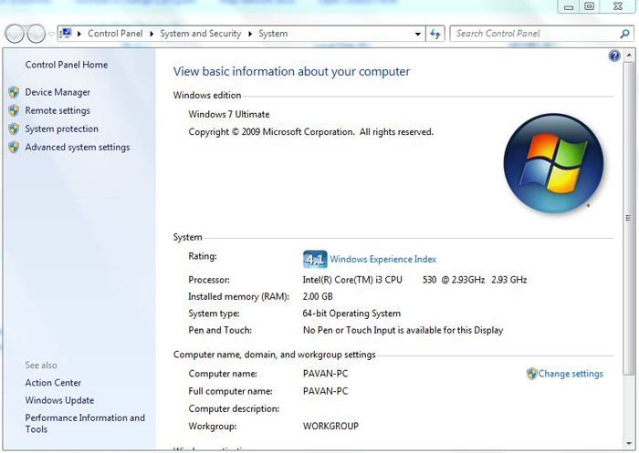
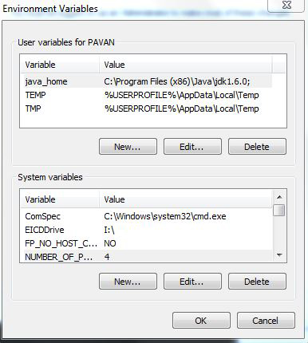
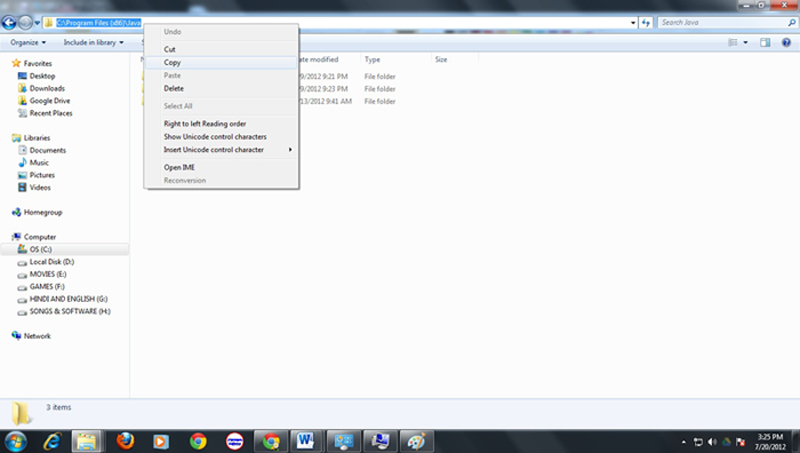
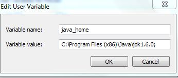
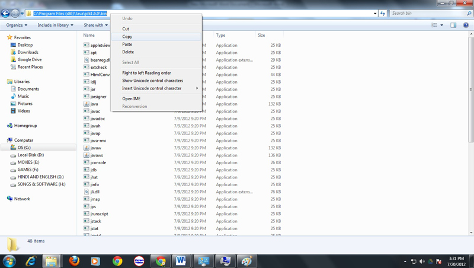
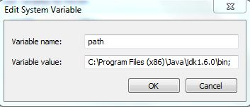
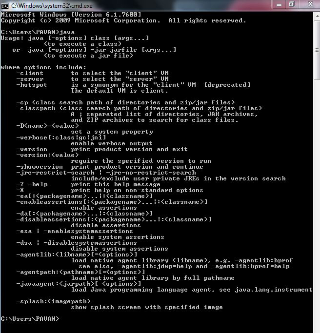
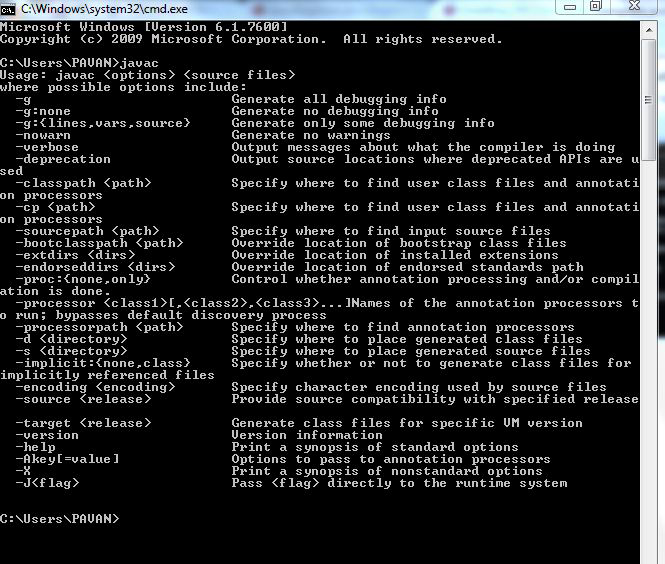

How To Install Java
JAVA PATHSETTING
After completion of the installation of java, next step is path setting in operating system to run java.
STEP1:
Right click on my computer >>> select Properties
Opens an window as below
STEP2:
Click on Advanced System Settings.
opens an window as below

STEP3:
Advanced System Settings ->Environment variables(at bottom)
Open Window as Below
STEP4:
NEW or EDIT in USER VARIABLE FOR PAVAN(your computer name).
Type the variable name as JAVA_HOME.
Type variable value as follows:
Open c:drive >>> open program files or program files(x86)>>>>open java folder copy the address of folder and paste in variable value and ADD semicolon to variable value as C:\Program Files (x86)\Java\jdk1.6.0;
selecting address as below
CHECK variable name, variable value as below figure
Click ok
STEP5:
NEW or EDIT in SYSTEM VARIABLES
Type the variable name as "path" (don't mention double quotes)
Type the variable value as follows: Open c:drive >>> open program files or program files(x86) >>>> open java folder >>> open JDK >>>open bin , copy the address of folder and paste in variable value and ADD semicolon to variable value as C:\Program Files (x86)\Java\jdk1.6.0\bin;
selecting address as below figure
CHECK variable name, variable value as below figure
Click Ok
Click OK to close Environment variable box.
Click OK to close System properties box.
Close MY COMPUTER PROPERTIES
Hence Path Setting task is completed.Now we have to test the working of java………
TESTING JAVA (OR) RUNNING JAVA
Test whether path setting is correct or not, using cmd opening command prompt (cmd) in windows xp open RUN and type cmd,in window vista,win 7 click start and in search type cmd a black screen appears with blinking cursor. type java and click enter if the cmd produces below image then our pathsetting is correct .
Enter command javac and click enter if the cmd produces below image then our pathsetting is correct .
we have to check both JAVA, JAVAC OR only check JAVAC before execution of java program.
if we can view as "no directory found" then our java path setting is wrong, verify path setting once again.